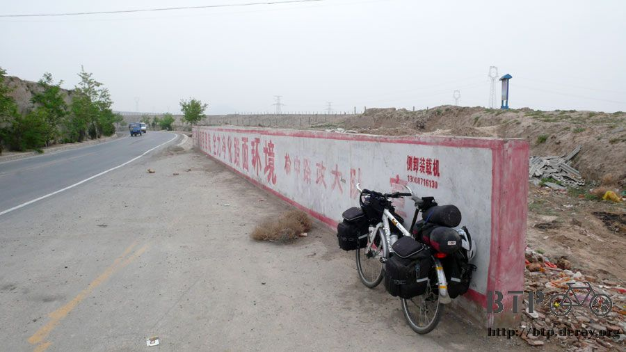
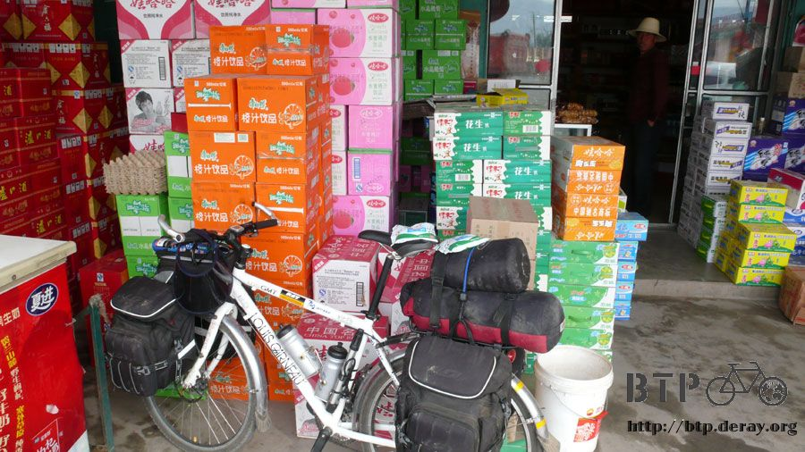
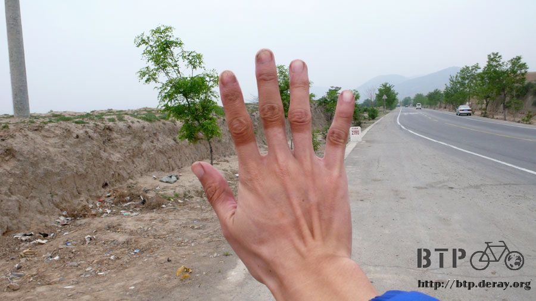
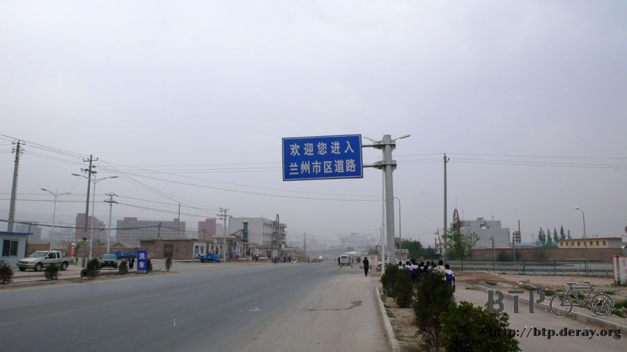
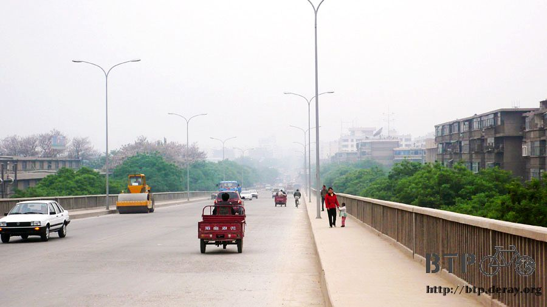
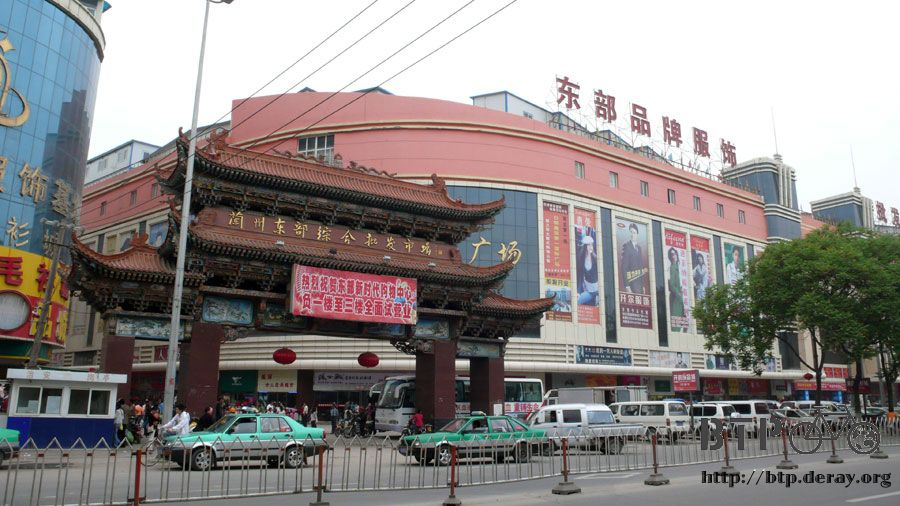
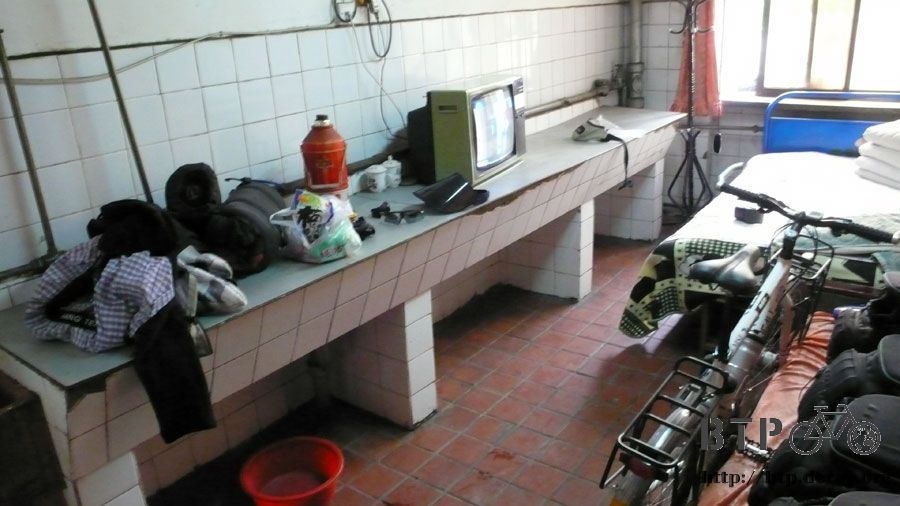
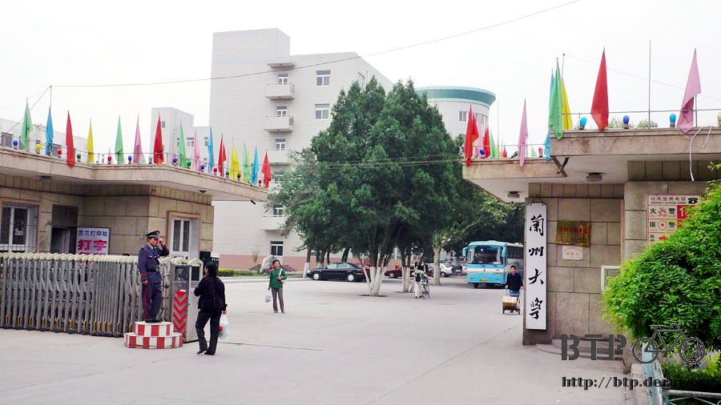
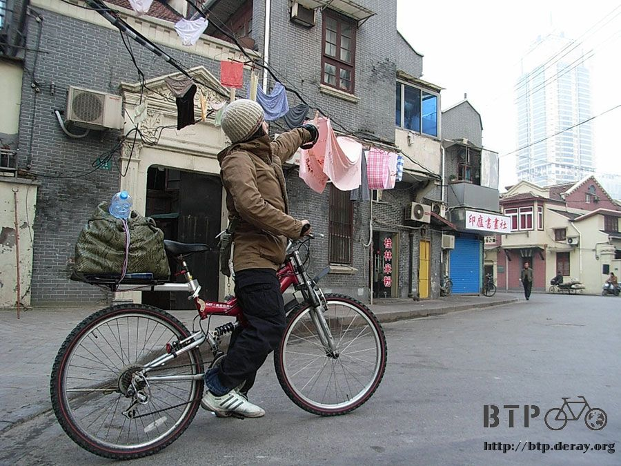

蘭州，我不熟
出發前，甚至到現在，每個關心我的人，知道我行程的人，都會跟我說『要小心』。
我總是覺得，畢竟我是一個大男生，自己一個人旅行很自在，不會有負擔也不會成為誰的累贅。
一個人，是寂寞，也是一種自由。
越往西北走，清晨和入夜後的氣溫就降低得特別明顯，
日夜溫差很大，有『早穿皮襖，午穿紗』之說。
現在我的穿著，已經由薄的排汗衣換成厚的排汗衣，這樣比較保溫，但感覺似乎比較容易流汗了。
在四歲的『打卡』背著書包要去上學的時候，姥姥在他的書包裡面放了一些衛生紙，
我則把整包剩下大概一半的糖果放到他的書包裡當零食，慢慢吃呀～小朋友，萬一蛀牙不要怪我~_~
他本來想戴著我的遮陽帽去上學，結果被姥姥硬搶下來還給我，然後就哭聲大響 XD
今天目標是70公里外的蘭州，對我來說是小意思中的小意思，但是對一天只騎50公里的夏代，應該有點辛苦吧。
剛出發騎不到五公里，回頭一看，夏代又不見了。
掉頭騎回去看是怎麼回事，看到之後只能苦笑兩聲哈哈，後輪又爆胎了。
雖然說是意料中事，昨天修車的時候就知道一定會爆胎，但是只騎了五公里就掛點，實在太不給面子了。
夏代叫我自己先騎，她用牽車走路的方式走去蘭州。
因為她的中國簽證須要延長加簽，所以她必須在今天下午兩點半之前到蘭州的公安局蓋章才可以。
從現在開始用牽車走路的話，絕對不可能來得及趕上。
稍微評估一下情勢，若是現在回頭牽一個小時的車回高崖鎮，重新換好內胎，但誰知道能撐幾公里？
若是牽車往下走，找下一個城鎮的修車店，也不知道要牽多久才會有城鎮？加上夏代一直要趕我走，怕拖累我的行程。
進‧退‧兩‧難
大手一揮，攔下了路過的交通車，車上雖然坐滿了人，但走道還有空間。
跟車掌小姐情商能不能讓夏代把自行車給牽上來，載她到可以修自行車的地方，或是直接載去蘭州也行。
本來車掌小姐很不願意，但我說夏代是外國人，而且車壞掉了，不能把她丟在這裡吧？
最後終於如願讓她和自行車上了車，交通車開走之後，試著騎很快想追著走，但是一個上坡就把我遠遠拋在後頭了。
一個語言不通，講的中文沒有人聽得懂，發音唯一標準的只有『你好』『謝謝』，
行李少得可憐，卻又裝了很多沿路買的中國小玩具，可是連修車的東西都沒有，
唯一的一個水壺是1元人民幣買的礦泉水瓶，喝完了就沒水喝，但卻隨身攜帶啤酒開瓶器的人，
一個敢隻身騎自行車旅行，日本大阪出生，在沖繩超便宜一千日幣民宿打工，血統是韓國人的夏代。
我很佩服她的勇氣，在交通車離開視線之後，我才想起忘了跟她說路上要小心。
雖然在路上遇到是偶然的巧合，但接下來想在蘭州重新碰頭，看來是不太可能的事了。
『Let's be one day partner』，昨天迷路的時候遇到夏代，
以為一天就可以到蘭州，既然順路就一起走，當一天的夥伴。
低頭看看手錶，昨天差不多這個時候聽到夏代那聲奇怪的『你好～』
雖然還沒到蘭州，但是one day partner的24小時緣份正好截止，祝妳的旅行順利，眾神保佑！
接下來騎車，就不需要再回頭看有沒有人被遺忘在後頭，
從高崖鎮往蘭州的路上，昨天看google earth的地圖，都是山路，以為今天會是個難熬的一天，
結果恰恰好相反，從高崖鎮海拔兩千，一路到蘭州海拔一千五，幾乎全部都是下坡路。

一路上只停下來買了兩包牛奶當早餐，咕嚕咕嚕喝完，配著營養餅乾，輕輕鬆鬆的往蘭州騎。

休息的時候，看到自己脫下手套的樣子，曬了20多天，手指已經變成兩種顏色。
要是我懶惰一點，臉也不要塗防曬的話，再過幾天，臉也會變成像手這樣的黑白郎君。

還不到中午十二點，就抵達蘭州了，這麼早到目的地讓我有點不知所措。
那接下來要幹嘛呢？

既然沒什麼特別的事要做，那就一樣找今天的落腳處吧。
我不太喜歡大城市，太枯燥太乏味，每一個大城市看起來都一樣，要是西安少了那漂亮的城牆，
北京的馬路小條一點、蘭州的海拔低一點，那麼這些城市給我的感覺都是一樣的。
一樣的喧鬧吵雜，一樣的商業氣息，一樣的讓我覺得格格不入。

我喜歡小小的鄉鎮，破破的，樓不高，可是會有街坊鄰居坐在門口聊天，
雜貨店裡一進去就會給人開心的尋寶感，什麼都想買來吃吃看。
食物好吃，而且付錢的時候只覺得為什麼那麼便宜？而不會皺眉頭嫌貴。
重點是人情味很濃厚，一個微笑可以換來更多微笑，大都市的通病在於，人與人的關係非常的疏遠陌生。

沿著馬路直直的走，不右轉也不左轉，看能通到哪裡去，
在招牌林立的街道中，瞄到一個小小的招待所看板。
騎車過去看，中國招待所的住房登記處，九成都設在二樓，另外一成則是三樓。
一鼓作氣將掛載著行李的小多(將近50公斤)扛上二樓，喘口氣的時候老闆就出來招呼了。
不用多說什麼，老闆也看慣像我這樣的單車旅行者，
只問了一句『你是要騎去新疆還是西藏？』
遇到這樣的老闆，其實心裡就打定在蘭州休息的今明兩天就住這裡了。
房間看過也蠻喜歡的，唯一有問題的部分就是價錢，一晚上要35元人民幣。
我很抱歉的搖頭和揮手說自己沒有那麼多錢，我去街上繞一繞看有沒有便宜點的地方，
要是找不到的話，我再回來這邊住，反正現在天色還早。
這邊的房價是，單人房35元、兩人房25元、三人房20元、四人房18元，除了單人房之外，其他房都會有陌生人同住一間。
我不想在休息的時候、外出吃飯的時候還要擔心自己的行李會不會遺失，
所以謝絕老闆推薦我住多人房的建議。
我每拉著小多轉一次身，往外踏一次步，老闆的慰留就更積極。
『不然這樣吧，算你30元一晚上。』我繼續往外走。
『還嫌貴，那25！25總行吧！』戴上太陽眼鏡準備上路。
『行啦行啦，20元，沒得再便宜啦，住下來吧。』
喔耶！殺價的最高境界，無聲勝有聲，從35降到20元，都不用我自己費唇舌工夫。
房間裡有我自己專屬的水龍頭和臉盆，等等買洗衣粉回來就可以把全部的衣服(我要在房裡打赤膊)徹底洗過一次。

中午就搞定了住的地方，午餐就吃這裡的清真牛肉麵，跟蘭州牛肉麵的口味有微妙的差異，
大概是湯頭比較清淡這一點吧，這碗麵我特地點了加肉的版本，
捧著熱騰騰的麵，然後給我加了七、八片的大塊滷牛肉。
看了覺得有點感動T_T這才是我認識的牛肉麵呀。
接著買了一個西安小吃『肉包饃』當飯後點心，邊吃邊散步逛街。
(奇怪，在西安的時候不吃，幹嘛特地跑到蘭州吃@@")
在雜貨店買了一捲新的衛生紙、一包洗衣粉(這個真的很重要)、蜜餞和一隻牛奶雪糕。
拎著塑膠袋吃冰棒，發現自己住的地方就在蘭州大學的隔壁而已。
以地名當做校名的大學，大多都是當地一等一的最高學府。
外表看起來很樸實，明天有空的話就去裡面參觀看看好了，不然不知道蘭州有什麼地方可以讓我閒晃一天的~_~

阿，差點忘了夏代，不知道她被交通車載去哪裡了？單車修得好嗎？找得到警察局延長簽證嗎？
眾神保佑呀、眾神保佑。

攝影：新井夏代，於三月十九日自上海出發的旅行第一天。
繼續閱讀：5.15 聽風的歌
中國-人民幣－ 1：4.3 台幣
5.14 |
總計：42.7元 |
早餐牛奶兩包2元、午餐牛肉麵加肉4.5元、肉包饃2元、雜貨店衛生紙、洗衣粉、蜜餞、冰棒8.7元、住店20元、晚餐炒米線3.5元、網吧一小時2元 |
|